Unit D Conclusion
 Unit D Diagnostic Self-Check
Unit D Diagnostic Self-Check
SC 1. For each description on the left, select all of the descriptors on the right that apply. As a hint, the number of descriptors that apply to each description is indicated in brackets after the description.
Description |
Descriptor |
a. the criteria that apply to a chemical system in equilibrium (3 descriptors) |
1. open system |
b. a system in which matter is allowed to enter and leave (1 descriptor) |
2. closed system |
c. a shift to the right (1 descriptor) |
3. colour changing |
d. the changes to the following system in a sealed container when placed in an ice bath (2 descriptors) |
4. colour remaining the same |
e. the shaded region identified on the following graph (1 descriptor) 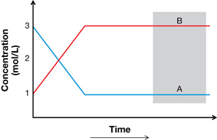 |
5. equal rate of forward and reverse reactions |
|
6. forward reaction favoured |
|
7. reverse reaction favoured |
Program of Studies
SC 1.
Description a.
D1.1k. Students will
- define equilibrium and state the criteria that apply to a chemical system in equilibrium; i.e., closed system, constancy of properties, equal rates of forward and reverse reactions
Description b.
D1.1k. Students will
- define equilibrium and state the criteria that apply to a chemical system in equilibrium; i.e., closed system, constancy of properties, equal rates of forward and reverse reactions
Description c.
D1.3k. Students will
- predict, qualitatively, using Le Châtelier’s principle, shifts in equilibrium caused by changes in temperature, pressure, volume, concentration or the addition of a catalyst and describe how these changes affect the equilibrium constant
Description d.
D1.3s. Students will
- analyze, qualitatively, the changes in concentrations of reactants and products after an equilibrium shift
- interpret data from a graph to determine when equilibrium is established and to determine the cause of a stress on the system
Description e.
D1.3s. Students will
- interpret data from a graph to determine when equilibrium is established and to determine the cause of a stress on the system
Hint
SC 1.
Description a.
What must you be able to accomplish and observe to study a system?
Description b.
What makes gaseous systems difficult to study?
Description c.
Which side of a reaction will experience an increase in concentration with this shift?
Description d.
What does Le Châtelier’s principle state?
Description e.
What happens to the concentrations of substances when a system reaches equilibrium?
Self-Check Answer
SC 1.
Description |
Descriptor |
a. |
2, 4, 5 |
b. |
1 |
c. |
6 |
d. |
3, 7 |
e. |
5 |
Lesson(s) to Review
SC 1.
Description a.
Module 7 Lesson 1
Description b.
Module 7 Lesson 1
Description c.
Module 7 Lesson 6
Description d.
Module 7 Lesson 6
Description e.
Module 7 Lesson 1
SC 2. Write the balanced chemical equation for the system shown in the following graph at equilibrium.
Program of Studies
SC 2.
D1.2k. Students will
- identify, write and interpret chemical equations for systems at equilibrium
Hint
SC 2. How do the values for concentration identify the reactants and products? How does the change in concentration of each species help you identify mole ratios for the reaction?
Self-Check Answer
SC 2.
A 2 B
The concentration of B at the beginning is 0; therefore, A is the only reactant. This is confirmed as the concentration of A drops over the time of the experiment.
The concentration of B increases until equilibrium is established, as is consistent with a product. The rate of change for A is one half that of B, indicating the mole proportions are 1A:2B
Lesson(s) to Review
SC 2. Module 7 Lesson 4
Use the following information to answer the next four questions:
C(g) + D2(g) 2 E(g) + F(g) + 100 kJ
CHANGES TO A SYSTEM
|
|
|
|
|
SC 3. Write the equilibrium law expression for the system described in the chemical equation shown.
Program of Studies
SC 3.
D1.4k. Students will
- define Kc to predict the extent of the reaction and write equilibrium-law expressions for given chemical equations, using lowest whole-number coefficients
D1.3s. Students will
- write the equilibrium law expression for a given equation
Hint
SC 3. What is the general rule to write equilibrium law expressions?
Self-Check Answer
SC 3.
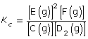
Lesson(s) to Review
SC 3. Module 7 Lesson 5
SC 4. Explain the effect that Change 5 listed above would have on the equilibrium.
Program of Studies
SC 4.
D1.3k. Students will
- predict, qualitatively, using Le Châtelier’s principle, shifts in equilibrium caused by changes in temperature, pressure, volume, concentration or the addition of a catalyst and describe how these changes affect the equilibrium constant
Hint
SC 4. Which reaction, forward or reverse, would enable the system to compensate for a stress like this?
Self-Check Answer
SC 4. The forward reaction would be favoured to reduce the concentration of the added reactant until a new equilibrium was established. Therefore, the system would shift to the right.
Lesson(s) to Review
SC 4. Module 7 Lesson 6
SC 5. Which of the changes to the system listed would cause the equilibrium shown to shift to the right.
Program of Studies
SC 5.
D1.3k. Students will
- predict, qualitatively, using Le Châtelier’s principle, shifts in equilibrium caused by changes in temperature, pressure, volume, concentration or the addition of a catalyst and describe how these changes affect the equilibrium constant
Hint
SC 5. Which reaction, forward or reverse, would enable the system to compensate for a stress like this?
Self-Check Answer
SC 5.
Change |
Rationale |
1 |
The forward reaction is exothermic; therefore, a reduction in temperature would favour the forward reaction in an attempt to replace the energy removed from the system by reducing the temperature. |
2 |
The lower number of particles is on the reactants side (2 moles versus 3 moles on the products side). The reduced pressure favours the forward reaction that results in more gaseous particles, which will increase the pressure in the system. |
5 |
See answer to SC 4 above. |
Lesson(s) to Review
SC 5. Module 7 Lesson 6
SC 6. State the change listed that will not shift this equilibrium.
Program of Studies
SC 6.
D1.3k. Students will
- predict, qualitatively, using Le Châtelier’s principle, shifts in equilibrium caused by changes in temperature, pressure, volume, concentration or the addition of a catalyst and describe how these changes affect the equilibrium constant
Hint
SC 6. What change in this list will have no effect on this or any equilibrium?
Self-Check Answer
SC 6.
Change 5—Adding a catalyst will not shift an equilibrium; it will only reduce the time required for the system to reach equilibrium.
Lesson(s) to Review
SC 6. Module 7 Lesson 6
SC 7. Consider the following system at equilibrium, graph, and possible stresses:
PCl5(g) + heat PCl3(g) + Cl2(g)
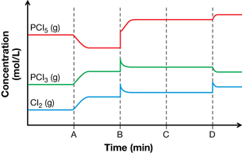
STRESSES
1. addition of heat |
2. addition of an inert gas |
3. addition of Cl2(g) |
4. pressure of system increased by decreasing the volume |
Match each stress listed to locations A through D shown on the graph.
Program of Studies
SC 7.
D1.3s. Students will
- interpret data from a graph to determine when equilibrium is established and to determine the cause of a stress on the system
Hint
SC 7. How would the concentration of each substance in the system initially change with stresses 2, 3, and 4?
Self-Check Answer
SC 7.
Position on Graph |
Stress |
Rationale |
A |
1 |
The forward reaction is endothermic. The system will compensate for the stress by attempting to remove the additional energy by favouring the forward reaction. The graph shows the concentration of reactant decreasing, and the concentration of the products increasing. |
B |
4 |
All three gases demonstrate an increase in concentration—this could be attributed to the reduction in volume for the system. After the initial volume change, the side with fewer particles will be favoured. A shift to the left is predicted. The graph shows the concentration of products decreasing and the concentration of the reactants increasing. |
C |
2 |
Addition of an inert gas will not change the concentration of any component in the system and will not affect the equilibrium. No change is predicted (initially or as the system moves toward equilibrium). No change in concentration is observed on the graph. |
D |
3 |
The only substance to show a change in concentration initially is Cl2(g). As a result of the increase in the concentration of Cl2(g), the system is expected to shift to the left. The graph shows the concentration of products decreasing and the concentration of reactants increasing. |
Lesson(s) to Review
SC 7. Module 7 Lesson 6
Use the following additional information to answer SC 8 and SC 9.
A system at equilibrium contains SO2(g), O2(g), and SO3(g). The concentrations of gases in the system are 3.46 x 10–2 mol/L, 1.95 x 10–5 mol/L, and 1.73 x 10–2 mol/L respectively.
SC 8.Write the equilibrium expression for this system.
Program of Studies
SC 8.
D1.4k. Students will
- define Kc to predict the extent of the reaction and write equilibrium-law expressions for given chemical equations, using lowest whole-number coefficients
D1.3s. Students will
- write the equilibrium law expression for a given equation
Hint
SC 8. What is the balanced chemical equation for the equilibrium in this system?
Self-Check Answer
SC 8.
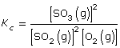
Lesson(s) to Review
SC 8. Module 7 Lesson 5
SC 9. Use your answer to SC 8 to calculate the value for the equilibrium constant, Kc, for this system.
Program of Studies
SC 9.
D2.3k. Students will
- calculate equilibrium constants and concentrations for homogeneous systems when concentrations at equilibrium are known
Hint
SC 9. Are you given equilibrium concentrations for each component in the equilibrium?
Self-Check Answer
SC 9.
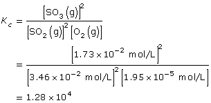
Lesson(s) to Review
SC 9. Module 7 Lesson 5
SC 10. Consider the following chemical system and information:
2 NH3(g) N2(g) + 3 H2(g)
Gaseous ammonia is introduced into an evacuated flask to a concentration of 2.00 mol/L. At equilibrium the concentration of ammonia in the flask is 1.00 mol/L. Calculate the Kc for this system using these data.
Program of Studies
SC 10.
D2.3k. Students will
- calculate equilibrium constants and concentrations for homogeneous systems when
- initial concentrations and one equilibrium concentration are known
Hint
SC 10. Are you provided equilibrium concentrations for each component in the equilibrium? If not, how can you use the information provided to calculate the concentrations of all substances at equilibrium?
Self-Check Answer
SC 10.
Concentration |
2 NH3(g) |
N2(g) |
+ 3 H2(g) |
|
Initial (mol/L) |
2.00 |
|
0 |
0 |
Change (mol/L) |
–1.00 |
|
+0.500 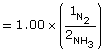 |
+1.50 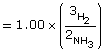 |
Equilibrium (mol/L) |
1.00 |
|
0.500 |
1.50 |
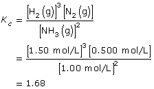
Lesson(s) to Review
SC 10. Module 7 Lesson 5
- Use the following information to answer SC 11:
- H2(g) + Cl2(g) 2 HCl(g)
Kc = 1.52 × 1053
SC 11.
- Comment on the value for the equilibrium constant for this system. Explain the significance of this value with respect to the ratio of the concentrations of the products and reactants in the system.
- Into an evacuated 1.00-L pressure cylinder are placed 0.500 mol each of hydrogen and chlorine gas. Use this information and the equilibrium constant to estimate the equilibrium concentrations for all three gases in the system.
- Compare the interpretation of the value for the equilibrium constant for this system from your answer to part a. to the values from your answer for part b. Describe how the two answers demonstrate consistency in your analysis of this system’s equilibrium.
Program of Studies
SC 11. a. D1.4k. Students will
- define Kc to predict the extent of the reaction
SC 11. b. D2.3k. Students will
- calculate equilibrium constants and concentrations for homogeneous systems when
- the equilibrium constant and one equilibrium concentration are known.
SC 11. c. D1.4k. Students will
- define Kc to predict the extent of the reaction
Hint
SC 11. a. What does the magnitude of the exponent for the equilibrium constant suggest about the position of the equilibrium for this system?
SC 11.b. Are you provided equilibrium concentrations for each component in the equilibrium? If not, how can you use the information provided to calculate the concentrations of all substances at equilibrium?
To develop your ICE table, let x equal the change in the concentration of hydrogen.
SC 11.c. How does the magnitude of the exponent for the equilibrium constant support the calculations shown in your ICE table?
Self-Check Answer
SC 11.
- The magnitude of the equilibrium constant, 1053, indicates that the equilibrium heavily favours the products. Therefore, the concentration of products will be significantly greater than the concentration of the reactants.
The magnitude suggests that the forward reaction is stoichiometric (almost 100%); therefore, the concentration of hydrogen and chlorine in the system is expected to be very small.
Concentration |
H2(g) |
+Cl2(g) |
2 HCl(g) |
|
Initial (mol/L) |
0.500 |
0.500 |
|
0 |
Change (mol/L) |
–x |
–x 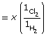 |
|
+2x 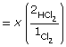 |
Equilibrium (mol/L) |
0.500 – x |
0.500 – x |
|
2x |
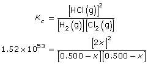
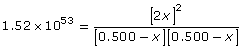
Simplify the expression by taking the square root of both sides.
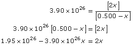
Collect like terms and solve for x.
x = 0.500 mol/L
Complete the ICE table to calculate the equilibrium concentration for each gas.
Concentration |
H2(g) |
+Cl2(g) |
2 HCl(g) |
|
Initial (mol/L) |
0.500 |
0.500 |
|
0 |
Change (mol/L) |
–0.500 |
|
–0.500 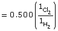 |
+1.00 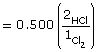 |
Equilibrium (mol/L) |
0.000 |
0.000 |
|
1.00 |
- As predicted by the magnitude of the equilibrium constant, the equilibrium concentrations of hydrogen and oxygen should be very low. It was suggested that the forward reaction was stoichiometric, with virtually all the moles of reactant being converted into product.
The equilibrium concentrations shown in the completed ICE table show a concentration of 0.000 mol/L for each reactant. Given that the system is at equilibrium, some hydrogen and chlorine will exist in the system, but this will be at a concentration well below the precision of three decimal places in the answer. Therefore, the two answers are consistent with the interpretation of the system provided in the answers to parts a. and b.
Lesson(s) to Review
SC 11.a.
Module 7 Lesson 5
SC 11.b.
Module 7 Lesson 5
SC 11.c.
Module 7 Lesson 5
SC 12. For each description on the left, match all of the chemical formulae on the right that apply. As a hint, the number of chemical formulae that apply to each description is indicated in brackets after the description:
Description |
Chemical Formula |
a. ___ and ___ are a conjugate pair. (6 possible pairs) |
1. HNO3(aq) |
b. amphiprotic species (4 chemical formulae) |
2. CH3COOH(aq) |
c. monoprotic species (5 chemical formulae) |
3. CH3COO–(aq) |
d. polyprotic species (2 chemical formulae) |
4. HS–(aq) |
e. can behave as a Brønsted-Lowry acid (7 chemical formulae) |
5. H2PO4–(aq) |
f. can behave as a Brønsted-Lowry base (8 chemical formulae) |
6. HPO42–(aq) |
g. A mixture of ___ and ___ form a buffer. (3 possible pairs) |
7. H3O+(aq) |
|
8. OH–(aq) |
|
9. H2O(l) |
|
10. NO3–(aq) |
|
11. S2–(aq) |
Program of Studies
SC 12.
a. D1.7k. Students will
- identify conjugate pairs and amphiprotic substances
b. D1.7k. Students will
- identify conjugate pairs and amphiprotic substances
c. D1.6k. Students will
- write Brønsted–Lowry equations, including indicators, and predict whether reactants or products are favoured for acid-base equilibrium reactions for monoprotic and polyprotic acids and bases
d. D1.6k. Students will
- write Brønsted–Lowry equations, including indicators, and predict whether reactants or products are favoured for acid-base equilibrium reactions for monoprotic and polyprotic acids and bases
e. D1.5k. Students will
- describe Brønsted–Lowry acids as proton donors and bases as proton acceptors
f. D1.5k. Students will
- describe Brønsted–Lowry acids as proton donors and bases as proton acceptors
g. D1.8k. Students will
- define a buffer as relatively large amounts of a weak acid or base and its conjugate in equilibrium that maintain a relatively constant pH when small amounts of acid or base are added
Hint
SC 12.
- What aspects do you need to see in the chemical formulas of a conjugate pair?
- What does the term amphi mean? How would the term apply to acids and bases?
- What does the term mono mean? How would the term apply to acids and bases?
- How is a polyprotic species different than a monoprotic species?
- How does this theory describe the behaviour of acids?
- How does this theory describe the behaviour of bases?
- What are the characteristics of the chemical components of a buffer?
Self-Check Answer
SC 12.
Description |
Chemical Formula |
a. |
1. and 10. |
b. |
4., 5., 6., 9. |
c. |
1., 2., 7., 8., 9. |
d. |
5., 11. |
e. |
1., 2., 4., 5., 6., 7., 9. |
f. |
3., 4., 5., 6., 8., 9., 10., 11 |
g. |
2. and 3. |
Lesson(s) to Review
SC 12.
- Module 8 Lesson 3
- Module 8 Lesson 3
- Module 8 Lesson 3
- Module 8 Lesson 3
- Module 8 Lesson 3
- Module 8 Lesson 3
- Module 8 Lesson 3
SC 13. Write the balanced chemical reaction and predict the position of the equilibrium for the following substances when combined.
- HNO3(aq) and OH–(aq)
- CH3COOH(aq) and H2O(l)
- H2PO4–(aq) and CH3COO–(aq)
Program of Studies
SC 13.
D1.6k. Students will
- write Brønsted–Lowry equations, including indicators, and predict whether reactants or products are favoured for acid-base equilibrium reactions for monoprotic and polyprotic acids and bases
Hint
SC 13. How can the position on the Table of Relative Strengths of Acids and Bases be used to predict the products of an acid-base reaction and the position of its equilibrium?
Self-Check Answer
SC 13.
- HNO3(aq) + H2O(l) → H3O+(aq) + NO3–(aq)
quantitative since HNO3(aq) is a strong acid
H3O+(aq) + OH–(aq) → 2 H2O(l)
quantitative (reaction of a strong acid with a strong base)
- CH3COOH(aq) + H2O(l) CH3COO–(aq) + H3O+(aq)
equilibrium favouring the reactants
CH3COOH(aq) is a weak acid and appears below H2O(l) on the table.
- H2PO4–(aq) + CH3COO–(aq) HPO42–(aq) + CH3COOH(aq)
equilibrium favouring the reactants
H2PO4–(aq) is a weak acid and appears below CH3COO–(aq) on the table.
Lesson(s) to Review
SC 13. Module 8 Lesson 3
SC 14. Sketch the titration curve for the titration of aqueous ethanoic acid with aqueous sodium hydroxide. On your sketch identify the location of the equivalence point and of the buffering regions. Explain chemically what is occurring at each of these locations on the titration curve.
Program of Studies
SC 14.
D1.3s. Students will
- interpret, qualitatively, titration curves of monoprotic and polyprotic acids and bases for strong acid–weak base and weak acid–strong base combinations, and identify buffering regions
Hint
SC 14. How does the strength of the chemical components in a reaction influence the shape of a titration curve?
Self-Check Answer
SC 14.
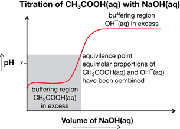
Lesson(s) to Review
SC 14. Module 8 Lesson 6
SC 15. Complete the following table comparing acids to their conjugate:
Substance |
Ka |
Conjugate |
Kb |
H2C6H6O6(aq) |
9.1 × 10–5 |
|
|
|
|
B(aq) |
4.2 × 10–6 |
Program of Studies
SC 15.
D2.2k. Students will
- define Kw , Ka , Kb and use these to determine pH, pOH, [H3O+] and [OH–] of acidic and basic solutions
Hint
SC 15. What is the relationship between Kw, Ka, and Kb?
Self-Check Answer
SC 15.
Substance |
Ka |
Conjugate |
Kb |
H2C6H6O6(aq) |
9.1 × 10–5 |
HC6H6O6–(aq) |
1.1 × 10–10 |
HB+(aq) |
2.4 × 10–9 |
B(aq) |
4.2 × 10–6 |
Lesson(s) to Review
SC 15. Module 8 Lesson 4
SC 16. Predict the [H3O+(aq)], [OH–(aq)], pH, and pOH for a 0.125–mol/L solution of
benzoic acid, C6H6COOH(aq).
Program of Studies
SC 16.
D2.2k. Students will
- define Kw, Ka, Kb and use these to determine pH, pOH, [H3O+] and [OH–] of acidic and basic solutions
Hint
SC 16. Benzoic acid is a weak acid. Do you have to consider the assumption (approximation rule) described on page 741 of the textbook to perform these calculations?
Self-Check Answer
SC 16. C6H6COOH(aq) + H2O(l) C6H6COO–(aq) + H3O+(aq)
Benzoic acid is a weak acid.
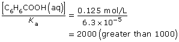
The assumption holds, meaning that the extent of ionization of the benzoic acid is very small in relation to its molar concentration; therefore, you can approximate the equilibrium concentration of the benzoic acid at equilibrium to be 0.125 mol/L.
Concentration (mol/L) |
C6H6COOH(aq) |
C6H6COO–(aq) |
+ H3O+(aq) |
|
Initial |
0.125 |
|
0 |
0 |
Change |
–x |
|
+x |
+x |
Equilibrium |
(0.125 – x) = 0.125 due to approximation |
|
x |
x |
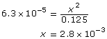
Therefore,
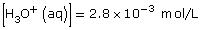
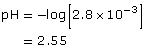
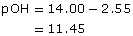
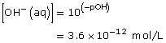
Lesson(s) to Review
SC 16. Module 8 Lesson 4